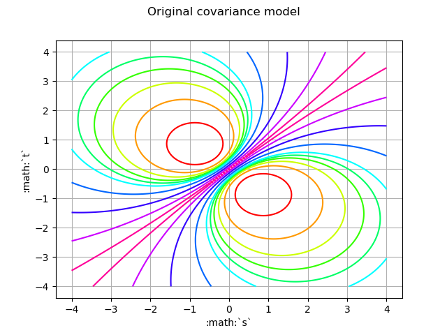
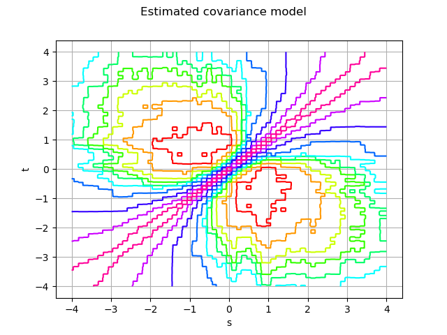

Note
Go to the end to download the full example code
Estimate a non stationary covariance function¶
The objective of this use case is to estimate  from several
fields generated by the process
from several
fields generated by the process  . We suppose that the process
is not stationary.
. We suppose that the process
is not stationary.
In the following example, we illustrate the estimation of the non stationary covariance model
![C : \mathcal{D} \times [-4, 4] \rightarrow \mathbb{R}]() defined by:
defined by:
![\begin{aligned}
\displaystyle C(s,t) = \exp\left(-\dfrac{4|s-t|}{1+s^2+t^2}\right)
\end{aligned}]()
The domain  is discretized on a mesh
is discretized on a mesh  which is a time grid with 64 points.
We build a normal process
which is a time grid with 64 points.
We build a normal process ![X: \Omega \times [-4, 4] \rightarrow \mathbb{R}]() with zero mean and
as covariance function.
We discretize the covariance model using
with zero mean and
as covariance function.
We discretize the covariance model using  for each
for each  .
We get a
.
We get a  fields from the process from which we
estimate the covariance model .
fields from the process from which we
estimate the covariance model .
We use the object NonStationaryCovarianceModelFactory which creates a UserDefinedCovarianceModel.
import math as m
import openturns as ot
import openturns.viewer as viewer
from matplotlib import pylab as plt
ot.Log.Show(ot.Log.NONE)
Create the time grid
t0 = -4.0
tmax = 4.0
N = 64
dt = (tmax - t0) / N
tgrid = ot.RegularGrid(t0, dt, N)
Create the covariance function at (s,t)
def C(s, t):
return m.exp(-4.0 * abs(s - t) / (1 + (s * s + t * t)))
Draw…
def f(X):
s, t = X
return [C(s, t)]
func = ot.PythonFunction(2, 1, f)
func.setDescription([":math:`s`", ":math:`t`", ":math:`cov`"])
graph = func.draw([t0] * 2, [tmax] * 2)
graph.setTitle("Original covariance model")
graph.setLegendPosition("")
view = viewer.View(graph)

Create data from a non stationary normal process Omega * [0,T]–> R
# Create the collection of HermitianMatrix
covariance = ot.CovarianceMatrix(N)
for k in range(N):
s = tgrid.getValue(k)
for ll in range(k + 1):
t = tgrid.getValue(ll)
covariance[k, ll] = C(s, t)
covmodel = ot.UserDefinedCovarianceModel(tgrid, covariance)
Create the normal process with that covariance model based on the mesh tgrid
process = ot.GaussianProcess(covmodel, tgrid)
# Get a sample of fields from the process
N = 1000
sample = process.getSample(N)
The covariance model factory
factory = ot.NonStationaryCovarianceModelFactory()
# Estimation on a sample
estimatedModel = factory.build(sample)
graph = estimatedModel.draw(0, 0, t0, tmax, 256, False)
graph.setTitle("Estimated covariance model")
graph.setLegendPosition("")
view = viewer.View(graph)
plt.show()
